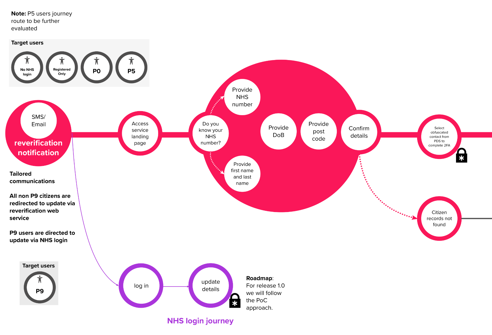

<article>
<section>
    <div class="wrapper">
        <div class="grid-full">

<h1 class="ralph">Designing national tooling to improve patient data accuracy for over 10 million users</h1>
</div>
<div class="marginbottom--m"></div>

<div class="grid-full" style="max-width: 1100px;">
    
</div>
<div class="marginbottom--l"></div>


<div class="grid-full leftpusher10" style="max-width: 794px;">
  <p><a href="https://www.nhs.uk/nhs-services/online-services/add-correct-contact-details/" title="">See the NHS service</a></p>
<h3 class="intro">Introduction</h3>
<p>NHS Digital serves as the central authority for information, data, and IT systems across England's health and social care network. With the NHS receiving over 1.3 million patients daily, maintaining accurate patient contact details is critical for effective healthcare delivery.</p>
<p>It identified a significant data quality problem: patient records contained missing or incorrectly formatted mobile numbers and email addresses. This meant patients weren't receiving vital health communications, appointment reminders, or test results. To tackle this, NHS Digital launched an initiative to contact patients directly via text and email, asking them to review and update their information.</p>
<p>However, the project faced a critical challenge. Despite having a dedicated delivery team—including a Delivery Manager, Product Manager, and four developers—there was no user-centred design expertise. This absence was flagged as a significant risk across NHS teams, particularly given the national scale and sensitivity of patient data.</p>
</div>
    <div class="grid-full">
      
    </div> 
<div class="grid-full leftpusher10" style="max-width: 794px;">
    <h3 class="intro">The goal</h3>
<p>The initial brief was to "inject UCD into the project," but this lacked the strategic direction the team desperately needed. My role evolved to become much more comprehensive:</p>

<p><strong>Build credibility and trust</strong> with the delivery team while establishing design as a core function rather than an afterthought. Transform a team that had never worked with designers into a user-centred delivery machine.</p>
<p><strong>Establish a complete product vision</strong> considering the vast NHS ecosystem, including how this service would integrate with GP systems, hospital networks, and other NHS Digital services used by millions of patients.</p>
<p><strong>Navigate complex governance</strong> by taking the service through CDDO (Central Digital and Data Office) assessments, ensuring we passed Discovery and Alpha phases and secured approval for Private Beta and the following six months of development.</p>
<p><strong>Scale rapidly</strong> from a pilot affecting 100 users to a national service impacting over 10 million patients across England.</p>

</div>
  <div class="grid-full">
    
  </div>

</div>
<div class="wrapper">

  <div class="grid-full leftpusher10" style="max-width: 794px;">
    <h3 class="intro">What do we know?</h3>
<p>Research revealed that business requirements had completely overshadowed user needs. While valid business needs existed, there was no understanding of patient experiences or healthcare worker frustrations.</p>

<p><strong>Patient confusion was rampant.</strong> People were constantly asked to update their details at every healthcare touchpoint—dentists, doctors, opticians—yet their records never seemed current. Many patients were unclear about how their data was handled or shared across the NHS.</p>
<p><strong>Healthcare workers were pressured</strong> to maintain accurate patient data without having the authority, time, or proper tools to do so effectively.</p>
<p><strong>The service was already in development</strong> before any design input, with stakeholders pushing for a launch to 100 pilot users despite having no user research or design validation.</p>
<p><strong>Data showed the scale of the problem:</strong> Millions of patient records contained outdated contact information, directly impacting patient care and NHS operational efficiency.</p>
</div>
    <div class="grid-full">
      
    </div> 
<div class="wrapper">

  <div class="grid-full leftpusher10" style="max-width: 794px;">
    <h3 class="intro">What I did</h3>
    <p>I moved at pace to establish design leadership across multiple fronts simultaneously.</p>
    <p><strong>Strategic foundation building:</strong> I defined the product strategy, vision, and OKRs through intensive stakeholder workshops and weekly alignment sessions. This wasn't just about the immediate service—I had to map how this fitted into the broader NHS ecosystem that the organisation didn't fully understand.</p>
<p><strong>Team transformation:</strong> Starting from zero design maturity, I created roadmaps, product backlogs, and weekly goals that aligned design and development. I had to prove that design could move at the speed of development without slowing delivery.</p>
<p><strong>NHS community engagement:</strong> I embedded myself in the wider NHS design community, running design crits, mentoring junior designers (sometimes acting as line manager), and delivering regular show-and-tells. This prevented duplicated work across teams and ensured we followed NHS design standards.</p>
<p><strong>Hands-on design and research:</strong> As the lead interaction designer, I built and iterated prototypes weekly, conducted user research sessions with limited patient access, and worked closely with our content designer to develop messaging standards that would eventually update the NHS Design System.</p>
<p><strong>Cross-functional collaboration:</strong> I worked directly with developers to ensure technical feasibility, created component specifications, and established a unified delivery roadmap that treated design and development as integrated rather than sequential.</p>
<p><strong>Governance and compliance:</strong> I prepared the service for Digital and Technology Assurance (DTA) assessments, ensuring we met the rigorous standards for national NHS services handling sensitive patient data.</p>


    <h3 class="intro">Outcomes</h3>
    <p>The transformation was remarkable. Within 10 months, we evolved from a team with no design capability to a user-centred delivery powerhouse that became a model for other NHS projects.</p>
<ul>
  <li><strong>Scale achieved:</strong> The service rapidly scaled from 100 pilot users to over 10 million patients across England, with the infrastructure supporting national rollout.</li>
<li><strong>Design maturity established:</strong> We delivered the team's first fully working prototype, implemented regular design critiques with developers and stakeholders, and created a sustainable design practice that continued beyond my involvement.
<li><strong>Governance success:</strong> We passed both the Discovery and Alpha phases of the DTA assessment, a significant achievement for a team that had never worked with designers before.</li>
<li><strong>Ecosystem understanding:</strong> We created a comprehensive blueprint of NHS patient data systems that the organisation hadn't previously mapped, providing strategic value beyond the immediate project.</li>
Knowledge sharing: Our learnings were shared across NHS teams, preventing duplicated effort and saving significant time and budget on related projects.</li>
<li><strong>Accessibility compliance:</strong> All designs met WCAG 2.2 standards, ensuring the service was accessible to all patients regardless of their abilities.</li>
<li><strong>Team capability:</strong> I mentored junior designers and coached internal product owners, leaving a more capable and confident team behind.</li>
  </ul>  
    
</div>

<div class="grid-full leftpusher10" style="max-width: 794px;">
  
    <h3 class="font30"><strong>What did I learn</strong></h3>
<p>This project marked my evolution into service design at scale. Working within the NHS taught me that successful design isn't just about interfaces—it's about understanding and improving entire systems that affect millions of lives.</p>

<ul>
  <li><strong>Research foundations matter:</strong> Understanding what's genuinely broken in a service, combined with quantitative data, provides the foundation for meaningful design decisions. I learned to communicate complex issues clearly and concisely to diverse stakeholders.</li>
<li><strong>Implementation focus:</strong> I stopped trying to emulate large consultancy approaches and instead focused on practical, realistic solutions that could be implemented effectively. The most brilliant design is worthless if it can't be built or maintained.</li>
<li><strong>Speed and quality aren't opposites:</strong> By establishing clear fundamentals—what people actually need and what solves real pain points—I could maintain quality while working at the pace required for national healthcare services.</li>
<li><strong>Community building accelerates impact:</strong> My investment in the NHS design community paid dividends for this project and the broader transformation of how NHS approaches user-centred design.</li>
</ul>

<p>The project reinforced that design leadership isn't just about making things look good—building capability, transforming teams and creating sustainable practices that continue delivering value long after individual projects end.</p>

</div>
 

<div class="marginbottom--xl"></div>

<div class="grid-full col">
  <div class="CrossPageNavigation">
    <div class="grid-full">
      <div class="CrossPageNavigationPrevious">
        <strong>Go to the next case study</strong><br />
          <a href="designsystem-2022.html">DWP's design system</a>
      </div>
    </div>
  </div>
</div>

</div>
</div>
</section>
</article>